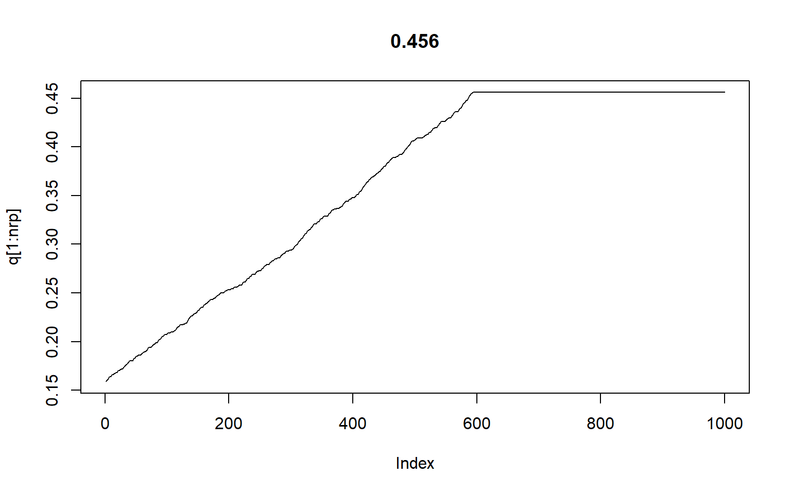

- 概要
- MCMCと統計モデリング
- MCMCの乱数生成の基本
- MCMCの利用方法
- MCMCとは何か
- マルコフ連鎖モンテカルロ法（Markov Chain Monte Carlo）
- 乱数生成の手法、マルコフ連鎖を使う
- 離散時間マルコフ連鎖: ある時点の値は1時点前の値\(\textbf{のみ}\)に依存
- モンテカルロ法：疑似乱数を使って何らかの性質を求める方法
- 確率的に変化するランダムな値の例↓
layout(matrix(1:2, ncol=2))
rdata<-rnorm(10000)
hist(rdata, breaks=12)
v<-1
m<-0
x<-seq(-5,5,0.01)
y<-(1/sqrt(2*pi*v))*exp(-(x-m)^2/(2*v))
plot(x,y,type='l')
- MCMCと統計モデリングの関わり
- そもそも
- MCMC -> 単に乱数の生成方法の一つ
- ただし、事後分布に従う乱数の生成に使えるところが偉い。
- ベイズの定理に従って作られた（パラメータの）事後分布は複雑な場合が多い（＝パラメータに関して何らかの情報を得るのが難しい。前章のビールの例のようにパラメータ\(\beta_1の2.5%がいくつ\)、とか分かればいいけど、分からない）
- なので、その分布に従う乱数を生成。乱数をもとに事後分布を評価。＝分布を評価するのではなく、分布に従って生成した値を評価＝対象が値なら、点推定も簡単。
- ちょっと脇道。ここからしばらくは頻度主義（求めたいパラメータは真の値を持つ）の緑本からお話しを：→こちらへどうぞ
- モンテカルロ法
- 乱数を利用した計算法（緑本, P177）
- 乱数を生成する手法（馬場本）
- 乱数生成する方法はたくさんあるけど、事後分布に従う乱数を発生できるのがMCMCということ
- モンテカルロ積分
- 第6章「事後分布の期待値を出すためには、その確率密度関数を積分しなきゃいけないけど、すごく大変」
- ここではそれをどう回避しているかを説明
- 事後分布のパラメータ\(\theta\)の期待値を知りたいとき、事後分布に従う乱数\(\hat{\theta}\)が十分な数（例えば1000個）生成されるなら、\(\theta\)の期待値は\(\frac{\Sigma^{1000}_{i=1} \hat{\theta}}{1000}\)。つまり乱数\(\hat{\theta}\)の平均値。ということで積分計算が不要になる。
- マルコフ連鎖
- 時点によって変化していく確率変数
- 遷移核：1時点前の値を所与としたと条件付き確率
- スマホの例
- ある時点でスマホユーザーがとる選択は
- 同じ会社のものを使い続ける
- 別な会社のものに乗り換える
- ある時点\(t\)で、どの会社のスマホを使ってるかは、それまで使っていたスマホ会社を所与とした条件つき確率
- このとき遷移核
- A社だった人がA社：\(P(X_t=A社|X_{t-i}=A社=0.4\)
- B社だった人がA社：\(P(X_t=B社|X_{t-i}=A社=0.6\)
- B社だった人がB社：\(P(X_t=B社|X_{t-i}=B社=0.1\)
- B社だった人がA社：\(P(X_t=B社|X_{t-i}=A社=0.9\)
- 定常分布
- さっきのスマホの例だと、最終的にA社が多くなって落ち着きそう -> A社60%で落ち着くらしい
- やってみよう
na<-1
nb<-1
aAi<-0.5
aBi<-1-aAi
bAi<-0.2
bBi<-1-bAi
nrp<-30
rAA<-0.4
rAB<-0.6
rBB<-0.1
rBA<-0.9
naA<-numeric(nrp)
naB<-numeric(nrp)
nbA<-numeric(nrp)
nbB<-numeric(nrp)
naA[1]<-na*aAi
naB[1]<-na*aBi
nbA[1]<-nb*bAi
nbB[1]<-nb*bBi
for(rp in 2:nrp){
naA[rp]<-naA[rp-1]*rAA+naB[rp-1]*rBA
naB[rp]<-naA[rp-1]*rAB+naB[rp-1]*rBB
nbA[rp]<-nbA[rp-1]*rAA+nbB[rp-1]*rBA
nbB[rp]<-nbA[rp-1]*rAB+nbB[rp-1]*rBB
}
layout(matrix(1:2, ncol=2))
plot(naA, type='l',col='red',ylim=c(0,1.0))
par(new=T)
plot(naB, type='l',col='blue',xlab='',ylab='',ylim=c(0,1.0))
plot(nbA, type='l',col='red',ylim=c(0,1.0))
par(new=T)
plot(nbB, type='l',col='blue',xlab='',ylab='',ylim=c(0,1.0))
- このようなユーザーからダンラムに選んで調査をすればきっと6:4になるだろう、と推測できる
- 遷移核を適切に決めることができれば、「何か」に従う乱数の生成が可能
- 遷移核をどう適切に決めるか。
- メトロポリス・ヘイスティングス法（MH法）
- 乱数生成アルゴリズムの一つ。
- ここではランダムウォークMH法
- MH法のアルゴリズム
- パラメータ\(\theta\)の分布を生成
- t番目の乱数: \(\hat{\theta_t}\)
- 初期値: \(\hat{\theta_1}\)
- 事後分布: \(f(\theta|D)\)
- 事前分布: \(f(\theta)\)
- 尤度関数: \(f(D|\theta)\)
- カーネル: \(Kernel(\theta)\)
- \(f(\theta|D)\propto f(D|\theta)f(\theta)=Kernel(\theta)\) : 事後分布=尤度x事前分布\(\propto\)カーネル
- 連続一様分布などに従ってランダムに初期値を決める
- \(平均0, 分散\sigma\)の正規分布に従う乱数を生成, \(\hat{\theta}_2^{提案}=\hat{\theta}_1+乱数\)
- \(f(\theta_1|D)\)と\(f(\theta_2^{提案}|D)\)の比を算出(\(rate\))。ただし\(rate=\frac{f(\hat{\theta}_2^{提案}|D)}{f(\hat{\theta}_1|D)}=\frac{Kernel(\hat{\theta}_2^{提案})}{Kernel(\hat{\theta_1})}\)
- ここ、本には「事後分布のカーネルがすでに得られているから、カーネルの比を取る的な書き方がされているけど、おそらく話としては、それぞれの\(\theta\)のときの確率の比を取る（それには事後分布の確率密度関数を使う）というのが筋。確率が高ければ提案を採用するという話なので。そのとき、事後分布のままだと分母の正規化定数が邪魔なんだけど、それ消せるからカーネルの比でOKですよ、ということだと思う。
- \(rate\)が1より大きければ提案を採用、1より小さくても\(rate\)の確率で採用。
- 緑本のメトロポリス法との違い
- 乱数生成が確率1/2から正規分布に従う乱数になった、だけ?
- MH法の計算例
- 6-10の5つの売り上げデータの例
- やってみよう!
layout(matrix(1:2, ncol=2))
nrp<-2000
data<-c(2.4,3.2,2.2,4.6,3.3)
ti<-runif(1,min=-2,max=2) # -2から2の連続一様分布に従う乱数
knl<-numeric(nrp)
theta<-numeric(nrp)
theta[1]<-ti
ratio<-1
for (rp in 1:nrp){
kp<-numeric(length(data))
for (d in 1:length(data)){
kp[d]<-exp(-((data[d]-theta[rp])^2)/2)/sqrt(2)*pi
}
knl[rp]<-prod(kp)*exp(-(theta[rp]^2/20000))/sqrt(20000*pi)
if (rp>1){
lr<-knl[rp]/knl[rp-1]
if (runif(1)>lr){
#print(lr)
theta[rp]<-theta[rp-1]
knl[rp]<-knl[rp-1]
}
}
theta[rp+1]<-theta[rp]+rnorm(1,0,1)
}
plot(theta[1:nrp],type='l', main=mean(theta))
hist(theta)
- MH法の欠点
- 乱数生成のときの分散をどう決めるか
- 大きすぎると提案値が大きくなることが増え、いいところに行きにくい
- 小さすぎるとなかなか変化しなくていいところに行きにくい＝受容率が低い
- ハミルトニアン・モンテカルロ法（HMC法）
- MH法の欠点を改善
- 受容率をあげつつ、パラメータの変化を大きく保つ
- 提案値をランダムではなく、確率密度の高い領域から選ぶ
- アルゴリズムの質的説明はP.72。stanにはNUTSというHMC法が実装されてるらしい
- 乱数の取り扱いの注意点
- 各種設定：乱数をいくつ生成するかなど
- 収束の評価：生成された値をどう評価するか
- 乱数の代表値を求める
- 繰り返し数(iter)の設定
- 乱数の個数。MH法の例ではiter=2000。メトロポリス法ではiter=100000だった。
- stanでは2000が設定されることが多い
- バーンイン期間(warmup)の設定
- 初期値に依存するので最初の方はあやしい
- 切り捨てて使わない
- 間引き(thin)の設定
- 生成した乱数を間引く
- 乱数間の自己相関を下げるための工夫
- チェーン(chains)の設定
- 収束評価のため、乱数生成を何度か繰り返す
- 代表値を比較などして評価
- chains=4を使うことが多い
- 収束の判定
- 良く使われる判定指標：\(\hat{R}\)
- \(\hat{R}=\frac{同一のチェーン内での乱数の分散の平均値}{異なるチェーンも含めたすべての乱数の分散}\)
- これが1.1より小さくなるまで繰り返す
- chans=1の場合、チェーン内をいくつかに分割して計算
- 点推定と区間推定
- 点推定：推定値を1点だけ提示->MED, EAP, MAPは点推定
- 区間推定：なんらかの区間を設定して、幅のある推定値を提示
- ベイズ信用区間
- 乱数を小さい値から並べて2.5%点から97.5%点に該当する範囲
- 95%ベイズ信用区間 / 95%ベイズ信頼区間
- 事後中央値(MED; posteriori median)
- 事後分布の中央値を採用
- 事後期待値(EAP; expected a posteriori)
- 事後分布の平均値を採用
- 事後確率最大値(MAP; maximum a posteriori)
- 事後分布において確率が最大となる点